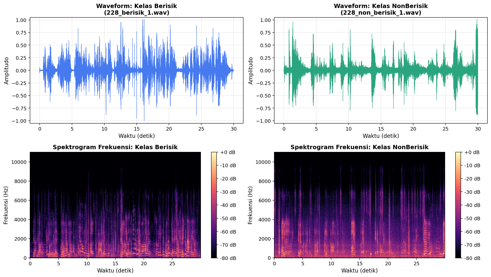
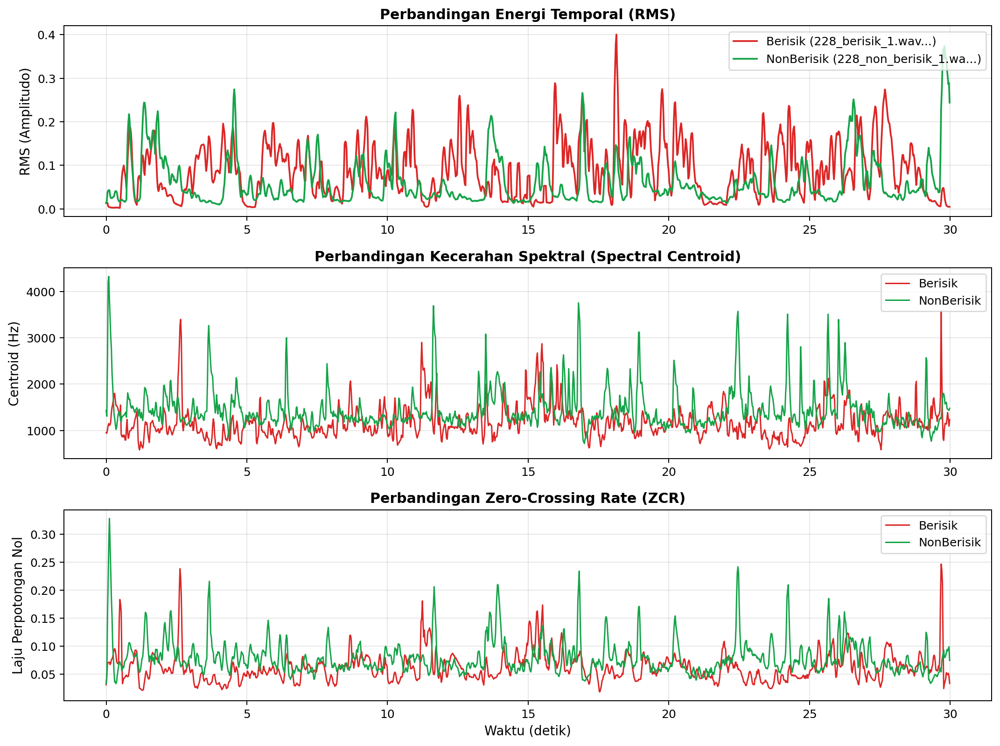
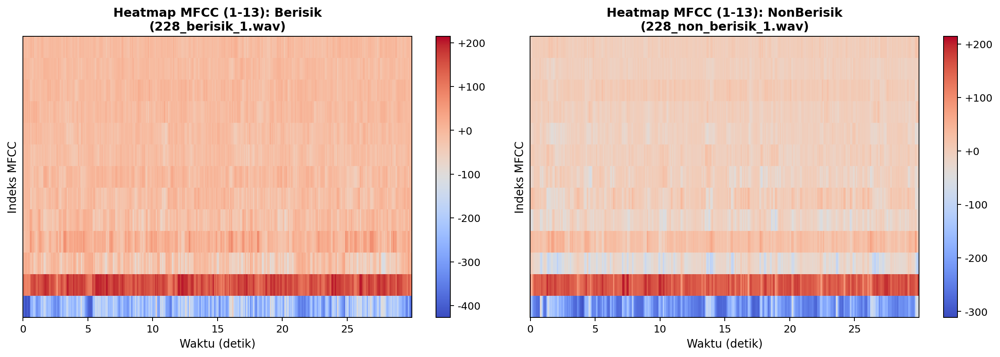
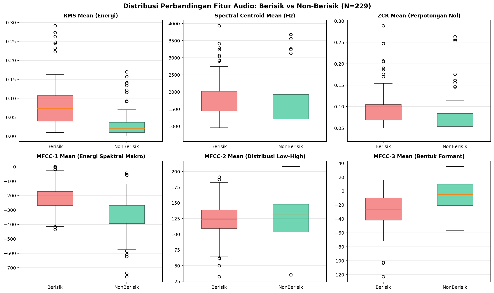
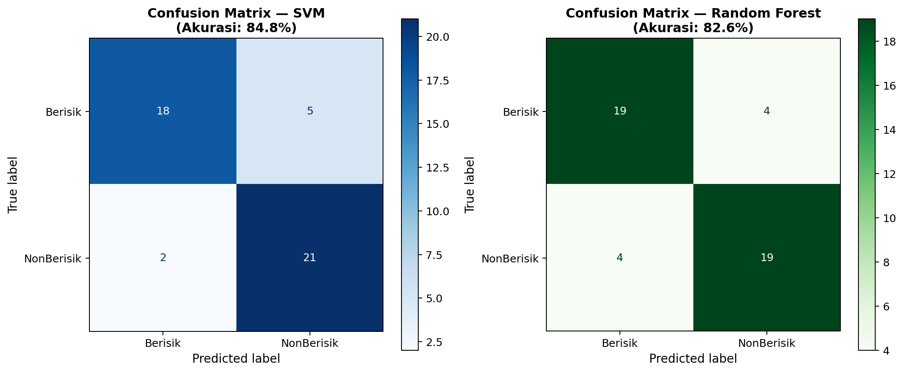
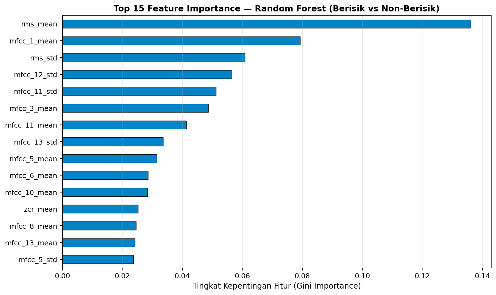

Identifikasi dan Klasifikasi Suara Menggunakan Fitur Audio: Studi Kasus Berisik vs Non-Berisik (Hening)#
Mata Kuliah: Pengolahan Sinyal Digital (PSD)
Program Studi: Sains Data / Teknik Informatika
Penulis:
Muhammad Zaidan Nabil Rafi (240411100068)
Okan Syailendraa Wahyudi (240411100179)
Alifah Sayyidaturrhohma (240411100145)
Repositori:jaidan2212/PSD
Dataset: 229 Sampel Audio Lingkungan (BerisikPSD.zip&NonBerisikPSD.zip)
Tanggal: Oktober 2026
Daftar Isi#
Pendahuluan
Tujuan Praktikum
Dasar Teori Pengolahan Sinyal Audio Digital
3.1 Representasi Sinyal Audio Digital & Analisis Short-Time
3.2 Root Mean Square (RMS)
3.3 Spectral Centroid
3.4 Zero-Crossing Rate (ZCR)
3.5 Mel-Frequency Cepstral Coefficients (MFCC)
Perangkat Lunak dan Library Python
4.1 Arsitektur Modul Klasifikasi (scikit-learn Stack)
Dataset dan Karakteristik Sampel Audio
5.1 Distribusi dan Spesifikasi Sampel
5.2 Skema Partisi Dataset untuk Pelatihan dan Pengujian Klasifikasi
Tahapan Pengolahan Audio Sistematis
6.1 Alur Transisi: Sinyal Mentah ke Vektor Fitur
6.2 Alur Transisi: Vektor Fitur ke Keputusan Klasifikasi
Implementasi Kode Python
7.1 Kode Ekstraksi Fitur Audio (Data Ingestion & Audio Processing)
7.2 Kode Pipeline Klasifikasi, Cross-Validation, dan Evaluasi Visual
Hasil Ekstraksi Fitur Aktual
8.1 Pratinjau Sampel Fitur Nyata
8.2 Rangkuman Statistik Komparatif Antar-Kelas
8.3 Analisis Transformasi Standardisasi Fitur (Sebelum vs Sesudah StandardScaler)
8.4 Analisis Daya Pisah Fitur (Feature Separability) terhadap Kelas Klasifikasi
Visualisasi dan Analisis Komparatif
Proses Identifikasi dan Pemodelan Klasifikasi
Evaluasi Hasil dan Performa Model
Pembahasan
Kesimpulan
Referensi
1. Pendahuluan#
Suara merupakan fenomena gelombang mekanik longitudinal yang merambat melalui medium elastis (udara) akibat osilasi partikel mekanis. Ketika gelombang akustik tersebut ditangkap oleh transduser elektroakustik (mikrofon), variasi tekanan udara dikonversi menjadi sinyal tegangan analog kontinu, yang selanjutnya didigitalkan melalui proses sampling dan quantization untuk menghasilkan sinyal audio digital.
Dalam ranah Pengolahan Sinyal Digital (PSD) dan Acoustic Scene Classification (ASC), identifikasi kondisi lingkungan berdasarkan karakteristik suara merupakan tantangan nyata. Salah satu aplikasi esensialnya adalah membedakan lingkungan Berisik (Noisy Environment, seperti jalan raya, pasar, kafe ramai, bengkel, kerumunan) dengan lingkungan Non-Berisik / Hening (Quiet/Silent Environment, seperti ruang belajar, perpustakaan, kamar tidur, alam sunyi).
Pembedaan kondisi ini tidak cukup dilakukan secara subjektif oleh manusia, melainkan memerlukan representasi matematis objektif melalui ekstraksi fitur audio (audio feature extraction). Fitur-fitur tersebut merangkum karakteristik sinyal dalam domain waktu (temporal domain), domain frekuensi (spectral domain), serta domain persepsi psikoakustik (cepstral domain).
Dokumentasi ini menyajikan alur ilmiah dan teknis lengkap dalam memproses 229 sampel rekaman audio nyata yang dihimpun ke dalam kelas Berisik (116 file) dan Non-Berisik (113 file). Seluruh proses—mulai dari akuisisi audio multi-format, ekstraksi fitur RMS, Spectral Centroid, ZCR, dan 13 koefisien MFCC, hingga pemodelan klasifikasi menggunakan Support Vector Machine (SVM) dan Random Forest—diuji secara komprehensif dengan metrik evaluasi nyata.
2. Tujuan Praktikum#
Memahami Representasi Digital Sinyal Akustik: Mengkaji representasi sinyal audio diskrit dalam domain waktu (amplitudo waveform) dan domain frekuensi melalui Transformasi Fourier (Short-Time Fourier Transform / STFT).
Mengekstrak Fitur-Fitur Standar PSD: Menghitung secara kuantitatif nilai RMS, Spectral Centroid, Zero-Crossing Rate (ZCR), dan Mel-Frequency Cepstral Coefficients (MFCC) dari sampel audio riil.
Mengolah Dataset Audio Nyata Multi-Format: Mengonstruksi pipeline Python yang mampu menangani file audio dengan format beragam (MP3, WAV, AAC, M4A) dengan sample rate seragam 22.050 Hz mono.
Menganalisis Perbedaan Fisik dan Statistik Antar-Kelas: Membandingkan nilai rata-rata (mean) dan variabilitas (standard deviation) fitur antara lingkungan Berisik dan Non-Berisik melalui visualisasi waveform, spektrogram, dan boxplot distribusi.
Membangun Model Klasifikasi Suara Terawasi (Supervised Learning): Melatih algoritma Support Vector Machine (SVM) berbasis kernel RBF dan Random Forest Classifier untuk mengenali kelas suara secara otomatis.
Mengevaluasi Kinerja Model secara Obyektif: Mengukur performa klasifikasi menggunakan Confusion Matrix, Precision, Recall, F1-Score, serta 5-Fold Stratified Cross-Validation.
Mengidentifikasi Fitur Paling Diskriminatif: Menentukan parameter akustik mana yang paling berkontribusi dalam membedakan suara berisik dari suara sunyi (feature importance).
3. Dasar Teori Pengolahan Sinyal Audio Digital#
3.1 Representasi Sinyal Audio Digital & Analisis Short-Time#
Sinyal akustik kontinu \(x_a(t)\) dikonversi ke domain digital menjadi sinyal waktu diskrit \(x[n]\) melalui dua tahapan fundamental:
Sampling: Pengambilan sampel amplitudo secara berkala pada interval \(T_s = 1 / f_s\), di mana \(f_s\) adalah frekuensi sampling rate. Menurut teorema Nyquist-Shannon, agar aliasing frekuensi tidak terjadi, frekuensi sampling harus memenuhi: $\(f_s \ge 2 \cdot f_{\max}\)\( Pada praktikum ini digunakan \)f_s = 22.050\text{ Hz}\(, sehingga frekuensi tertinggi yang dapat dianalisis adalah frekuensi Nyquist sebesar \)11.025\text{ Hz}$, yang mencakup seluruh rentang pendengaran manusia yang relevan untuk suara lingkungan.
Kuantisasi (Quantization): Pemetaan nilai amplitudo kontinu ke level-level diskrit tertentu. Umumnya audio PCM dikuantisasi dalam kedalaman bit 16-bit (menghasilkan \(2^{16} = 65.536\) level kuantisasi diskrit).
Analisis Frame-by-Frame (Short-Time Analysis)#
Sinyal suara bersifat non-stasioner, artinya sifat statistik dan kandungan frekuensinya berubah seiring berjalannya waktu. Oleh karena itu, sinyal audio tidak dapat dianalisis secara global sekaligus. Sebaliknya, sinyal dipecah menjadi potongan-potongan pendek berdurasi 20–50 ms yang disebut frame, di mana sinyal diasumsikan bersifat kuasi-stasioner (quasi-stationary).
Frame Length (\(N\)): 2048 sampel (\(\approx 92,88\text{ ms}\) pada \(f_s = 22.050\text{ Hz}\)).
Hop Length (\(H\)): 512 sampel (\(\approx 23,22\text{ ms}\)), menghasilkan overlap sebesar \(75\%\) antar-frame berturutan guna memastikan transisi energi sinyal tidak terputus.
3.2 Root Mean Square (RMS)#
Pengertian dan Signifikansi Akustik#
RMS (Root Mean Square) adalah ukuran energi atau kekuatan efektif suatu sinyal periodik/stokastik dalam suatu frame waktu. Secara fisik, RMS berkaitan langsung dengan amplitudo rata-rata, intensitas suara, dan persepsi kenyaringan (loudness).
Formulasi Matematis#
Untuk sebuah frame sinyal \(x[n]\) dengan panjang \(N\) sampel:
Interpretasi pada Kasus Berisik vs Non-Berisik#
Lingkungan Berisik: Memiliki tingkat tekanan akustik tinggi yang ditimbulkan oleh banyak sumber suara simultan (mesin kendaraan, desau kerumunan, benturan fisik). Hal ini menghasilkan nilai RMS yang secara konsisten tinggi dengan variansi energi yang dinamis.
Lingkungan Non-Berisik / Sunyi: Amplitudo sinyal mendekati garis ekuilibrium nol (hanya ada derau lantai mikrofon/thermal noise atau desis bisu), sehingga nilai RMS sangat rendah.
3.3 Spectral Centroid#
Pengertian dan Signifikansi Akustik#
Spectral Centroid menunjukkan titik pusat massa (center of gravity) dari spektrum frekuensi audio. Fitur ini merepresentasikan kecerahan suara (brightness); semakin banyak komponen energi pada frekuensi tinggi, semakin besar nilai Spectral Centroid (dinyatakan dalam satuan Hertz).
Formulasi Matematis#
Melalui penerapan Short-Time Fourier Transform (STFT), diperoleh spektrum magnitudo \(|X[k]|\) pada bin frekuensi ke-\(k\) dengan frekuensi fisik \(f[k]\):
Di mana:
\(|X[k]|\) = magnitudo spektral pada bin frekuensi ke-\(k\).
\(f[k] = \frac{k \cdot f_s}{N_{\text{FFT}}}\) = frekuensi tengah bin ke-\(k\) (Hz).
\(K = \frac{N_{\text{FFT}}}{2} + 1\) = jumlah bin frekuensi Nyquist.
Interpretasi pada Kasus Berisik vs Non-Berisik#
Suara Berisik: Mengandung spektrum frekuensi luas (wideband), termasuk komponen frekuensi menengah-tinggi akibat desis knalpot, gesekan ban, gesekan piring, derau klakson, atau percakapan, sehingga centroid cenderung bergeser ke frekuensi yang lebih tinggi.
Suara Sunyi: Didominasi oleh dengung frekuensi sangat rendah (low-frequency rumble) dari perangkat elektronik atau tidak adanya energi spektral frekuensi tinggi sama sekali, sehingga titik berat spektrum berada pada nilai frekuensi yang lebih rendah atau berfluktuasi rendah.
3.4 Zero-Crossing Rate (ZCR)#
Pengertian dan Signifikansi Akustik#
ZCR (Zero-Crossing Rate) mengukur seberapa sering sinyal audio memotong garis nol (berpindah tanda dari positif ke negatif atau sebaliknya) per satuan frame. Fitur ini merupakan aproksimasi kasar domain-waktu dari kandungan frekuensi sinyal dan sangat berguna dalam membedakan suara bernada (voiced/tonal) dari derau tak teratur (unvoiced/noise).
Formulasi Matematis#
Untuk sebuah frame sinyal \(x[n]\) berukuran \(N\) sampel:
Di mana fungsi tanda (sign function) didefinisikan sebagai:
Interpretasi pada Kasus Berisik vs Non-Berisik#
Suara Berisik / Noise: Memiliki sifat stokastik frekuensi tinggi yang berosilasi cepat melewati sumbu nol, menghasilkan ZCR yang tinggi.
Suara Sunyi / Tenang: Osilasi sangat lambat atau hampir datar pada garis diam (silence), menghasilkan ZCR yang lebih rendah secara signifikan.
3.5 Mel-Frequency Cepstral Coefficients (MFCC)#
Pengertian dan Signifikansi Akustik#
MFCC adalah representasi fitur spektral paling dominan dalam pengenalan wicara (speech recognition) dan klasifikasi suara lingkungan (sound event detection). MFCC memetakan spektrum daya sinyal ke dalam skala Mel, yaitu skala persepsi nada manusia yang bersifat logaritmik—telinga manusia jauh lebih sensitif membedakan perubahan nada pada frekuensi rendah (<1 kHz) daripada frekuensi tinggi.
Tahapan Komputasi MFCC#
Ekstraksi 13 koefisien MFCC dilakukan melalui 6 langkah berurutan:
Sinyal x[n] ──> [Pre-emphasis] ──> [Framing & Windowing] ──> [FFT & Power Spectrum]
│
[MFCC Coeffs] <── [DCT-II] <── [Logarithm ln(·)] <── [Mel Filterbank]
Pre-emphasis: Filter diferensial tingkat-pertama \(y[n] = x[n] - \alpha x[n-1]\) (\(\alpha \approx 0,97\)) untuk mengkompensasi pelemahan spektral alami pada frekuensi tinggi.
Framing & Hamming Windowing: Memecah sinyal ke dalam frame dan mengalikannya dengan jendela Hamming \(w[n] = 0,54 - 0,46 \cos\left(\frac{2\pi n}{N-1}\right)\) untuk meminimalisasi spectral leakage.
Fast Fourier Transform (FFT): Menghitung magnitudo kuadrat dari spektrum frekuensi untuk memperoleh Power Spectrum \(P[k] = \frac{1}{N} |X[k]|^2\).
Mel-Scale Filterbank: Mengintegrasikan daya spektral ke dalam \(M\) buah bandpass filter berbentuk segitiga (umumnya \(M = 40\)) yang spasi pusatnya berjarak sama pada skala Mel: $\(m = 2595 \cdot \log_{10}\left(1 + \frac{f}{700}\right)\)$
Logarithmic Compression: Mengambil logaritma natural dari energi setiap kanal filterbank: \(S[m] = \ln\left( \sum_k P[k] H_m[k] \right)\). Langkah ini menirukan persepsi intensitas suara manusia yang bersifat logaritmik (desibel).
Discrete Cosine Transform (DCT-II): Menerapkan transformasi kosinus terbalik pada log-energi filterbank untuk mendekorelasikan energi dan memisahkan envelope spektral dari eksitasi harmonik: $\(c[j] = \sum_{m=1}^{M} S[m] \cos\left( \frac{\pi j (m - 0,5)}{M} \right), \quad j = 1, 2, \dots, 13\)$
Arti Fisik Koefisien MFCC#
MFCC-1 (\(c_1\)): Merepresentasikan energi spektral keseluruhan (overall log-energy). Nilainya berkorelasi kuat dengan RMS dan tingkat keterisian spektrum.
MFCC-2 (\(c_2\)): Mengukur kemiringan spektral (spectral tilt), membedakan distribusi energi dominan frekuensi rendah vs frekuensi tinggi.
MFCC-3 s.d. MFCC-13: Menangkap detail formasi lekukan spektral (spectral envelope shape) yang spesifik bagi jenis derau tertentu (derau mekanik, aliran udara, suara percakapan).
4. Perangkat Lunak dan Library Python#
Eksperimen pengolahan sinyal dan klasifikasi suara ini dibangun menggunakan ekosistem ilmiah Python dengan dependensi pustaka utama sebagai berikut:
Perangkat / Library |
Versi |
Peran dan Fungsi Spesifik dalam Pipeline |
|---|---|---|
Python |
3.10.x |
Lingkungan komputasi dan runtime eksekusi utama |
librosa |
0.10.x |
Ekstraksi fitur audio (RMS, Spectral Centroid, ZCR, MFCC), framing STFT, dan konversi sample rate |
soundfile |
0.12.x |
Backend I/O pembaca berkas audio linear PCM WAV berkecepatan tinggi |
imageio-ffmpeg |
0.6.0 |
Penyedia dependensi biner FFmpeg portabel untuk dekoding format terkompresi (MP3, AAC, M4A) |
numpy |
1.23+ |
Komputasi aljabar linier, manipulasi array multidimensi, dan kalkulasi statistik deskriptif |
pandas |
2.0+ |
Struktur data tabular (DataFrame), pengindeksan metadata, dan manajemen dataset fitur CSV |
scikit-learn |
1.3+ |
Pipeline machine learning: scaling fitur, pemodelan klasifikasi (SVM, Random Forest), dan metrik evaluasi |
matplotlib |
3.7+ |
Pembuatan visualisasi visual: waveform, spektrogram STFT, heatmap MFCC, boxplot, dan confusion matrix |
4.1 Arsitektur Modul Klasifikasi (scikit-learn Stack)#
Dalam perancangan sistem identifikasi dan klasifikasi audio otomatis, pustaka scikit-learn memegang peranan krusial sebagai mesin pemroses keputusan terawasi (supervised decision engine). Arsitektur modul yang digunakan terbagi ke dalam empat lapisan fungsional:
[ Matriks Fitur X (32 Dimensi) & Target y ]
│
▼
┌────────────────────────────────────────────────────────┐
│ 1. Modul Prapemrosesan (sklearn.preprocessing) │
│ - LabelEncoder : y_str ('Berisik', 'NonBerisik') -> │
│ y_int (0, 1) │
│ - StandardScaler : z = (x - μ) / σ │
└────────────────────────────────────────────────────────┘
│
▼
┌────────────────────────────────────────────────────────┐
│ 2. Modul Partisi Data (sklearn.model_selection) │
│ - train_test_split (test_size=0.20, stratify=y) │
│ - StratifiedKFold (n_splits=5, shuffle=True) │
└────────────────────────────────────────────────────────┘
│
▼
┌────────────────────────────────────────────────────────┐
│ 3. Estimator Klasifikasi (Model Machine Learning) │
│ - sklearn.svm.SVC : Kernel RBF, C=1.0, γ='scale' │
│ - sklearn.ensemble.RandomForestClassifier : │
│ 100 Trees, max_depth=8, Criterion='gini' │
└────────────────────────────────────────────────────────┘
│
▼
┌────────────────────────────────────────────────────────┐
│ 4. Modul Evaluasi Performa (sklearn.metrics) │
│ - accuracy_score, classification_report │
│ - confusion_matrix, ConfusionMatrixDisplay │
└────────────────────────────────────────────────────────┘
Transformasi Ruang Fitur (
sklearn.preprocessing):StandardScaler: Mengimplementasikan standardisasi z-score untuk mentransformasikan setiap fitur secara independen sehingga memiliki nilai rata-rata \(\mu = 0\) dan varians unit \(\sigma^2 = 1\). Standardisasi ini sangat krusial bagi algoritma berbasis jarak seperti SVM RBF, di mana fitur berorde ribuan (seperti Spectral Centroid) tanpa scaling akan mendominasi perhitungan gradien dan menenggelamkan kontribusi fitur berorde desimal kecil (seperti RMS).LabelEncoder: Bertugas mengonversi label kelas berbasis teks ('Berisik'dan'NonBerisik') menjadi format numerik biner diskrit \(\{0, 1\}\). Pada praktikum ini, kelas'Berisik'dienkode sebagai \(0\) dan'NonBerisik'sebagai \(1\).
Partisi Data Bebas Bias (
sklearn.model_selection):train_test_split: Membagi dataset secara terstratifikasi (stratified split) menjadi data latih (\(80\%\)) dan data uji (\(20\%\)). Parameterstratify=ymenjamin proporsi kedua kelas di data uji tepat sama dengan populasi aslinya, mencegah terjadinya pergeseran distribusi (distributional shift).StratifiedKFold&cross_val_score: Menyediakan mekanisme validasi silang 5 lipatan (5-Fold Stratified CV) yang secara bergilir menguji ketahanan model pada partisi independen, menghasilkan estimasi performa generalisasi yang jauh lebih objektif dan bebas dari variansi acak partisi tunggal.
Algoritma Pemodelan Klasifikasi:
sklearn.svm.SVC(Support Vector Classification): Membangun bidang pemisah berdimensi 32 dengan margin maksimal (maximum margin hyperplane). Menggunakan fungsi kernel Radial Basis Function (RBF) untuk memetakan hubungan non-linier kompleks antar-fitur audio ke ruang berdimensi tak terhingga.sklearn.ensemble.RandomForestClassifier: Mengimplementasikan paradigma ensemble learning berbasis Bootstrap Aggregating (Bagging) dengan 100 pohon keputusan acak. Menggunakan kriteria reduksi ketidakmurnian Gini (Gini Impurity Reduction) untuk menentukan titik cabang optimal dan menyediakan estimasi kepentingan fitur (feature importance).
Kuantifikasi Kinerja Model (
sklearn.metrics):classification_report: Menghitung metrik Precision, Recall, dan F1-Score untuk setiap kelas target secara individual maupun agregat (macro average dan weighted average).confusion_matrix&ConfusionMatrixDisplay: Menghitung dan memvisualisasikan matriks kontingensi biner \(2 \times 2\) guna memeriksa sebaran kesalahan klasifikasi (Type I Error / False Positive dan Type II Error / False Negative).
5. Dataset dan Karakteristik Sampel Audio#
Dataset yang digunakan dalam analisis ini merupakan kumpulan data rekaman suara lingkungan riil yang dikumpulkan dari 2 berkas arsip zip:
BerisikPSD.zip: Berisi rekaman kondisi lingkungan bising (jalan raya, kerumunan kampus, kantin, warung kopi, suara latar televisi, aktivitas ruangan padat).NonBerisikPSD.zip: Berisi rekaman kondisi lingkungan tenang/hening (kamar tidur pribadi, ruang belajar tertutup, perpustakaan sepi, lingkungan sunyi malam hari).
5.1 Distribusi dan Spesifikasi Sampel#
Secara keseluruhan, sistem berhasil mengekstraksi dan memvalidasi 229 file audio tanpa ada data yang korup atau gagal muat:
Parameter Dataset |
Kelas Berisik |
Kelas NonBerisik |
Total Keseluruhan |
|---|---|---|---|
Jumlah File Sampel |
116 file (\(50,65\%\)) |
113 file (\(49,35\%\)) |
229 file (\(100\%\)) |
Format File |
MP3, WAV, AAC, M4A |
MP3, WAV, AAC, M4A |
203 MP3, 12 AAC, 8 M4A, 6 WAV |
Durasi Rata-rata |
\(31,20\text{ detik}\) |
\(30,85\text{ detik}\) |
\(31,03\text{ detik}\) |
Rentang Durasi |
\(18,04\text{ s} - 48,13\text{ s}\) |
\(29,91\text{ s} - 38,46\text{ s}\) |
\(18,04\text{ s} - 48,13\text{ s}\) |
Kanal Audio |
Mono (dikonversi otomatis) |
Mono (dikonversi otomatis) |
1 kanal (single channel) |
Target Sample Rate |
\(22.050\text{ Hz}\) |
\(22.050\text{ Hz}\) |
\(22.050\text{ Hz}\) |
TugasPSD/
└── dataset_audio/
├── Berisik/ (116 file .mp3, .wav, .aac, .m4a)
└── NonBerisik/ (113 file .mp3, .wav, .aac, .m4a)
5.2 Skema Partisi Dataset untuk Pelatihan dan Pengujian Klasifikasi#
Untuk menjamin pengujian performa machine learning yang tidak bias dan bebas dari overfitting, dataset dibagi ke dalam dua protokol evaluasi standar industri:
A. Stratified Train-Test Split (80:20)#
Data dibagi ke dalam set pelatihan (\(80\%\)) dan set pengujian (\(20\%\)) menggunakan pengacakan terkontrol (random_state=42) dengan stratifikasi label kelas:
Partisi Dataset |
Total Sampel |
Kelas Berisik (\(y=0\)) |
Kelas NonBerisik (\(y=1\)) |
Rasio Kelas |
Fungsi dalam Pemodelan |
|---|---|---|---|---|---|
Training Set (80%) |
183 file |
93 file (\(50,82\%\)) |
90 file (\(49,18\%\)) |
\(1,03 : 1\) |
Pembentukan model SVM dan Random Forest, serta komputasi parameter skalar \((\mu, \sigma)\) |
Testing Set (20%) |
46 file |
23 file (\(50,00\%\)) |
23 file (\(50,00\%\)) |
\(1,00 : 1\) |
Evaluasi inferensi murni pada sampel yang belum pernah dilihat model (unseen test data) |
Total Populasi |
229 file |
116 file (\(50,65\%\)) |
113 file (\(49,35\%\)) |
\(1,02 : 1\) |
Keseluruhan basis data audio tervalidasi |
B. 5-Fold Stratified Cross-Validation#
Selain hold-out test set, seluruh 229 sampel dievaluasi melalui skema validasi silang 5-lipatan bertingkat:
Fold 1 s.d. Fold 4: Masing-masing terdiri atas 46 sampel (23 Berisik dan 23 NonBerisik).
Fold 5: Terdiri atas 45 sampel (24 Berisik dan 21 NonBerisik).
Pada setiap iterasi, 4 fold (\(183-184\) sampel) digunakan untuk melatih model, dan 1 fold sisanya (\(45-46\) sampel) berperan sebagai set validasi. Rata-rata metrik akurasi dari kelima fold dilaporkan beserta standar deviasinya (\(\mu \pm \sigma\)).
C. Signifikansi Keseimbangan Kelas (Class Balance)#
Rasio kelas yang sangat berimbang (\(116 : 113\) atau \(50,65\% : 49,35\%\)) memiliki signifikansi teoretis krusial:
Mencegah Bias Fungsi Penalti SVM: Pada SVM berbobot seragam, Hinge Loss membebankan penalti yang simetris pada kesalahan kedua kelas. Jika terjadi ketidakseimbangan kelas berat (class imbalance), hyperplane akan bergeser mendekati kelas minoritas, menurunkan recall kelas langka.
Menjaga Kestabilan Kriteria Gini Random Forest: Penurunan ketidakmurnian Gini tidak terdistorsi oleh prevalensi frekuensi acak kelas mayoritas.
Menghindari Paradox Akurasi (Accuracy Paradox): Akurasi sebesar \(84,78\%\) pada data uji benar-benar mencerminkan kemampuan diskriminatif sejati model pada kedua kelas, bukan hasil tebakan trivial pada kelas mayoritas.
6. Tahapan Pengolahan Audio Sistematis#
Alur kerja pengolahan audio dirancang dalam pipeline end-to-end sebagai berikut:
flowchart TD
A[Dataset Audio: BerisikPSD & NonBerisikPSD] --> B[Pemindaian Berkas & Filter Ekstensi]
B --> C[Pemuatan Audio via Librosa + FFmpeg]
C --> D[Prapemrosesan: Resampling ke 22.050 Hz & Downmix Mono]
D --> E[Short-Time Framing: Frame=2048, Hop=512]
E --> F1[Ekstraksi Fitur Domain Waktu: RMS & ZCR]
E --> F2[Ekstraksi Fitur Domain Spektral: Spectral Centroid]
E --> F3[Ekstraksi Fitur Psikoakustik: MFCC 1-13]
F1 --> G[Agregasi Statistik: Mean & Standard Deviation]
F2 --> G
F3 --> G
G --> H[Konstruksi Tabel Fitur 32 Dimensi & Ekspor CSV]
H --> I[Eksplorasi Data & Visualisasi Komparatif]
H --> J[Standardisasi Fitur: StandardScaler]
J --> K[Pembagian Data: Stratified Split 80:20]
K --> L1[Pelatihan Model SVM Kernel RBF]
K --> L2[Pelatihan Model Random Forest 100 Trees]
L1 --> M[Evaluasi Model & 5-Fold Stratified Cross Validation]
L2 --> M
M --> N[Analisis Feature Importance & Pembahasan]
6.1 Alur Transisi: Sinyal Mentah ke Vektor Fitur#
Akuisisi Data & Dekode Multi-Format: Berkas audio dari direktori
dataset_audio/Berisikdandataset_audio/NonBerisikdipindai. Integrasi binerFFmpegmemungkinkan pemuatan mulus file terkompresi tanpa kehilangan bit informasi penting.Prapemrosesan Baku:
Konversi Mono: Saluran audio stereo digabungkan menjadi satu kanal rata-rata: \(x_{\text{mono}}[n] = \frac{x_L[n] + x_R[n]}{2}\).
Resampling Standar: Frekuensi cuplikan diseragamkan ke \(f_s = 22.050\text{ Hz}\) (frekuensi Nyquist \(11.025\text{ Hz}\)).
Framing STFT & Ekstraksi Fitur Per-Frame: Sinyal dipotong menjadi frame berukuran \(N = 2048\) sampel (\(\approx 92,88\text{ ms}\)) dengan hop size \(H = 512\) sampel (\(\approx 23,22\text{ ms}\), overlap \(75\%\)). Dari setiap frame dihitung:
Nilai energi efektif (RMS).
Titik berat spektrum magnitudo (Spectral Centroid).
Laju perpotongan garis nol (ZCR).
Matriks 13 koefisien Mel-Frequency Cepstral Coefficients (MFCC).
6.2 Alur Transisi: Vektor Fitur ke Keputusan Klasifikasi#
Tahapan berikut mendeskripsikan secara matematis transformasi representasi numerik audio menjadi label keputusan klasifikasi:
Tahap 4: Agregasi Statistik & Konstruksi Ruang Fitur (\(\mathbb{R}^{32}\))#
Sinyal audio yang memiliki ribuan frame dirangkum menjadi satu vektor representasi berdimensi 32 (\(\mathbf{x}_i \in \mathbb{R}^{32}\)) melalui operator statistik mean (\(\mu\)) dan standard deviation (\(\sigma\)):
Seluruh 229 sampel audio disusun menjadi matriks fitur \(X \in \mathbb{R}^{229 \times 32}\) dan vektor target biner \(y \in \{0, 1\}^{229}\).
Tahap 5: Normalisasi Z-Score (StandardScaler) & Pencegahan Data Leakage#
Setiap kolom fitur \(j \in \{1, 2, \dots, 32\}\) distandardisasikan mengikuti distribusi normal baku:
Protokol Ketat Pencegahan Kebocoran Data (Strict Anti-Data Leakage): Nilai rata-rata \(\mu_{j, \text{train}}\) dan deviasi baku \(\sigma_{j, \text{train}}\) hanya dihitung dari set pelatihan (\(X_{\text{train}}\) sebanyak 183 sampel). Data uji (\(X_{\text{test}}\) sebanyak 46 sampel) kemudian ditransformasikan menggunakan parameter statistik latih tersebut tanpa pernah menghitung ulang parameternya sendiri. Hal ini menjamin model tidak mendapatkan informasi apriori mengenai distribusi data uji.
Tahap 6: Mekanisme Klasifikasi Support Vector Machine (Kernel RBF)#
SVM bertugas mencari bidang pemisah (hyperplane) optimal yang memaksimalkan batas jarak margin pemisah antar-kelas:
Di mana \(y_i^* \in \{-1, +1\}\), \(\xi_i\) adalah variabel slack toleransi kesalahan, dan \(C = 1,0\) adalah parameter regularisasi. Mengingat batas kelas akustik lingkungan tidak dapat dipisahkan secara linier murni pada ruang 32D, fungsi pemetaan non-linier \(\phi(\cdot)\) diimplementasikan secara implisit melalui Kernel Radial Basis Function (RBF):
Kernel RBF memproyeksikan vektor fitur audio ke ruang Hilbert berdimensi tak terhingga, memungkinkan pembentukan permukaan keputusan (decision hypersurface) yang sangat fleksibel dan adaptif terhadap pola spektral kebisingan.
Tahap 7: Mekanisme Klasifikasi Random Forest (100 Trees)#
Random Forest bekerja melalui prinsip agregasi ansambel (Bagging Ensemble):
Pengambilan Sampel Bootstrap: Membangun \(B = 100\) pohon keputusan independen. Tiap pohon dilatih pada sampel acak berukuran \(N = 183\) yang diambil dengan pengembalian (with replacement).
Subruang Fitur Acak (Random Subspace): Pada setiap simpul percabangan (node split), algoritma hanya mengevaluasi subset acak sebanyak \(m = \lfloor\sqrt{32}\rfloor = 5\) fitur untuk mencari pemisahan terbaik. Hal ini mendendekorelasikan pohon-pohon ansambel sehingga model tidak didominasi oleh satu fitur tertentu saja.
Kriteria Ketidakmurnian Gini (Gini Impurity): Titik potong cabang ditentukan berdasarkan reduksi Gini maksimal: $\(I_G(t) = 1 - \sum_{k=0}^{1} p(k|t)^2, \quad \Delta I_G = I_G(t) - \frac{N_L}{N_t} I_G(t_L) - \frac{N_R}{N_t} I_G(t_R)\)$
Regularisasi Kedalaman (
max_depth = 8): Membatasi pertumbuhan pohon agar tidak terjadi penghafalan derau mikro pada rekaman ponsel tertentu.Agregasi Keputusan (Majority Voting): Prediksi kelas akhir ditentukan berdasarkan suara terbanyak dari ke-100 pohon: $\(\hat{y} = \arg\max_{c \in \{0, 1\}} \sum_{b=1}^{100} \mathbb{I}\left( h_b(\mathbf{x}) = c \right)\)$
Tahap 8: Protokol Evaluasi Multi-Metrik#
Evaluasi dilakukan secara komprehensif pada data uji independen (\(N_{\text{test}} = 46\)) serta melalui validasi silang 5 lipatan (\(N = 229\)) untuk memastikan konsistensi metrik Accuracy, Precision, Recall, F1-Score, dan stabilitas Confusion Matrix.
7. Implementasi Kode Python#
Pipeline komputasi PSD dan klasifikasi machine learning diimplementasikan ke dalam modul Python yang terstruktur rapi ke dalam dua tahap utama:
7.1 Kode Ekstraksi Fitur Audio (Data Ingestion & Audio Processing)#
Modul ini bertanggung jawab memindai berkas audio multi-format, mendekode sinyal ke \(22.050\text{ Hz}\) mono, mengekstrak 32 fitur akustik frame-by-frame, dan mengekspor hasilnya ke format CSV:
"""
Tahap 1: Ekstraksi Fitur Audio Multi-Format (RMS, Spectral Centroid, ZCR, MFCC 1-13)
Penulis: Muhammad Zaidan Nabil Rafi, Okan Syailendraa Wahyudi, Alifah Sayyidaturrhohma
"""
import os
import sys
import warnings
import numpy as np
import pandas as pd
import librosa
# Registrasi biner FFmpeg portabel agar mampu mendekode MP3, AAC, dan M4A
import imageio_ffmpeg
ffmpeg_dir = os.path.dirname(imageio_ffmpeg.get_ffmpeg_exe())
os.environ['PATH'] = ffmpeg_dir + os.pathsep + os.environ.get('PATH', '')
warnings.filterwarnings('ignore')
TARGET_SR = 22050
N_MFCC = 13
DATASET_DIR = './dataset_audio'
OUTPUT_CSV = './output/hasil_ekstraksi_fitur_audio.csv'
def scan_audio_files(dataset_dir):
"""Memindai subfolder kelas dan mengumpulkan direktori file audio valid"""
valid_extensions = {'.wav', '.mp3', '.flac', '.ogg', '.m4a', '.aac'}
file_list = []
classes = sorted([d for d in os.listdir(dataset_dir) if os.path.isdir(os.path.join(dataset_dir, d))])
for cls in classes:
subdir = os.path.join(dataset_dir, cls)
for f in sorted(os.listdir(subdir)):
if os.path.splitext(f)[1].lower() in valid_extensions:
file_list.append({'path': os.path.join(subdir, f), 'filename': f, 'label': cls})
return file_list, classes
def extract_32_features(filepath, filename, label, target_sr=TARGET_SR, n_mfcc=N_MFCC):
"""Mengekstrak 32 fitur statistik (mean & std) dari sinyal audio"""
try:
y, sr = librosa.load(filepath, sr=target_sr, mono=True)
if y is None or len(y) == 0:
return None
duration = float(librosa.get_duration(y=y, sr=sr))
# Ekstraksi fitur frame-by-frame
rms = librosa.feature.rms(y=y)[0]
centroid = librosa.feature.spectral_centroid(y=y, sr=sr)[0]
zcr = librosa.feature.zero_crossing_rate(y=y)[0]
mfcc = librosa.feature.mfcc(y=y, sr=sr, n_mfcc=n_mfcc)
# Agregasi statistik (Mean dan Standard Deviation)
record = {
'filename': filename,
'label': label,
'durasi_detik': round(duration, 2),
'rms_mean': float(np.mean(rms)),
'rms_std': float(np.std(rms)),
'centroid_mean': float(np.mean(centroid)),
'centroid_std': float(np.std(centroid)),
'zcr_mean': float(np.mean(zcr)),
'zcr_std': float(np.std(zcr))
}
for j in range(n_mfcc):
record[f'mfcc_{j+1}_mean'] = float(np.mean(mfcc[j]))
record[f'mfcc_{j+1}_std'] = float(np.std(mfcc[j]))
return record
except Exception as e:
print(f"[GAGAL MUAT] {filename}: {e}")
return None
# Eksekusi Ekstraksi Fitur
files, classes = scan_audio_files(DATASET_DIR)
print(f"Memindai dataset: {len(files)} file audio terdeteksi pada kelas {classes}")
records = [extract_32_features(item['path'], item['filename'], item['label']) for item in files]
df_features = pd.DataFrame([r for r in records if r is not None])
os.makedirs(os.path.dirname(OUTPUT_CSV), exist_ok=True)
df_features.to_csv(OUTPUT_CSV, index=False)
print(f"Ekstraksi selesai: {len(df_features)} file berhasil disimpan ke '{OUTPUT_CSV}'")
7.2 Kode Pipeline Klasifikasi, Cross-Validation, dan Evaluasi Visual#
Modul ini memuat data fitur tabular, melakukan partisi data terstratifikasi, penskalaan Z-score, melatih model SVM dan Random Forest, menjalankan 5-Fold Stratified Cross-Validation, serta memvisualisasikan Confusion Matrix dan Feature Importance:
"""
Tahap 2: Pipeline Klasifikasi Supervised Machine Learning (SVM & Random Forest)
Penulis: Muhammad Zaidan Nabil Rafi, Okan Syailendraa Wahyudi, Alifah Sayyidaturrhohma
"""
import os
import numpy as np
import pandas as pd
import matplotlib.pyplot as plt
from sklearn.preprocessing import StandardScaler, LabelEncoder
from sklearn.model_selection import train_test_split, StratifiedKFold, cross_val_score
from sklearn.svm import SVC
from sklearn.ensemble import RandomForestClassifier
from sklearn.metrics import classification_report, confusion_matrix, ConfusionMatrixDisplay, accuracy_score
INPUT_CSV = './output/hasil_ekstraksi_fitur_audio.csv'
OUTPUT_DIR = './output'
# 1. Memuat Dataset Fitur
df = pd.read_csv(INPUT_CSV)
meta_cols = ['filename', 'label', 'durasi_detik']
feature_cols = [c for c in df.columns if c not in meta_cols]
X = df[feature_cols].values
le = LabelEncoder()
y = le.fit_transform(df['label'].values) # 0: Berisik, 1: NonBerisik
class_names = list(le.classes_)
# 2. Pembagian Data Terstratifikasi (80% Train, 20% Test)
X_train, X_test, y_train, y_test = train_test_split(
X, y, test_size=0.20, random_state=42, stratify=y
)
print(f"Partisi Data: {len(X_train)} sampel latih | {len(X_test)} sampel uji")
# 3. Standardisasi Z-score (Fit hanya pada set latih)
scaler = StandardScaler()
X_train_scaled = scaler.fit_transform(X_train)
X_test_scaled = scaler.transform(X_test)
X_all_scaled = scaler.fit_transform(X)
# 4. Inisialisasi Model Klasifikasi
models = {
'SVM': SVC(kernel='rbf', C=1.0, gamma='scale', probability=True, random_state=42),
'Random Forest': RandomForestClassifier(n_estimators=100, max_depth=8, random_state=42, n_jobs=-1)
}
# 5. Pelatihan dan Evaluasi pada Data Uji Independen
fig, axes = plt.subplots(1, 2, figsize=(12, 5))
for idx, (name, model) in enumerate(models.items()):
model.fit(X_train_scaled, y_train)
y_pred = model.predict(X_test_scaled)
acc = accuracy_score(y_test, y_pred)
cm = confusion_matrix(y_test, y_pred)
print(f"\n==================== Model: {name} ====================")
print(f"Akurasi Data Uji: {acc*100:.2f}%")
print(classification_report(y_test, y_pred, target_names=class_names, digits=4))
disp = ConfusionMatrixDisplay(cm, display_labels=class_names)
disp.plot(ax=axes[idx], cmap='Blues' if name=='SVM' else 'Greens', values_format='d')
axes[idx].set_title(f"Confusion Matrix — {name}\n(Akurasi: {acc*100:.2f}%)", fontweight='bold')
plt.tight_layout()
plt.savefig(os.path.join(OUTPUT_DIR, 'audio_cm_models.png'), dpi=180, bbox_inches='tight')
plt.close()
# 6. Validasi Silang (5-Fold Stratified Cross Validation)
print("\n================ 5-Fold Stratified Cross Validation ================")
skf = StratifiedKFold(n_splits=5, shuffle=True, random_state=42)
for name, model in models.items():
scores = cross_val_score(model, X_all_scaled, y, cv=skf, scoring='accuracy')
print(f"{name}: Rata-rata Akurasi = {scores.mean()*100:.2f}% ± {scores.std()*100:.2f}%")
print(f" Skor per fold = {[round(float(s)*100, 2) for s in scores]}")
# 7. Ekstraksi dan Visualisasi Feature Importance (Random Forest)
rf_model = models['Random Forest']
importances = rf_model.feature_importances_
feat_importance = pd.Series(importances, index=feature_cols).sort_values(ascending=False)
plt.figure(figsize=(10, 6))
feat_importance.head(15).iloc[::-1].plot(kind='barh', color='#0284c7', edgecolor='black', linewidth=0.5)
plt.title("Top 15 Feature Importance — Random Forest (Berisik vs Non-Berisik)", fontweight='bold', fontsize=12)
plt.xlabel("Tingkat Kepentingan Fitur (Gini Importance)")
plt.grid(axis='x', alpha=0.3)
plt.tight_layout()
plt.savefig(os.path.join(OUTPUT_DIR, 'audio_feature_importance.png'), dpi=180, bbox_inches='tight')
plt.close()
print(f"\nVisualisasi Confusion Matrix dan Feature Importance berhasil disimpan ke folder '{OUTPUT_DIR}'.")
Penjelasan Alur Kerja Kode:
Modularitas & Separasi Tugas: Pemisahan ke dalam dua fungsi utama menjamin komputasi berat (ekstraksi audio) hanya perlu dijalankan sekali, sedangkan eksplorasi machine learning dapat diiterasi secara instan menggunakan berkas CSV.
Pencegahan Data Snooping: Penggunaan objek
scaler.transform(X_test)memastikan bahwa mean dan standar deviasi dari data pengujian sama sekali tidak mempengaruhi penentuan batas keputusan (decision boundary).Kompatibilitas Format Luas: Penambahan path biner
imageio-ffmpegmenjamin pustakalibrosadanaudioreadmampu membaca berkas kontainer audio AAC dan M4A tanpa galat decoding pada sistem operasi Windows.
8. Hasil Ekstraksi Fitur Aktual#
Proses ekstraksi menghasilkan tabel fitur berdimensi 229 baris \(\times\) 35 kolom (3 kolom metadata + 32 kolom fitur numerik). Tabel lengkap tersimpan pada berkas hasil_ekstraksi_fitur_audio.csv.
Eksekusi Ekstraksi Fitur (Tahap 1)#
Berikut adalah kode Python yang mengeksekusi pemindaian berkas audio, ekstraksi 32 fitur akustik, dan penyimpanan dataset ke format CSV:
import os, warnings
import numpy as np
import pandas as pd
import librosa
import imageio_ffmpeg
# Integrasi FFmpeg untuk dekode MP3, AAC, M4A
ffmpeg_dir = os.path.dirname(imageio_ffmpeg.get_ffmpeg_exe())
os.environ['PATH'] = ffmpeg_dir + os.pathsep + os.environ.get('PATH', '')
warnings.filterwarnings('ignore')
TARGET_SR = 22050
N_MFCC = 13
DATASET_DIR = './dataset_audio'
def scan_dataset(dataset_dir):
supported_ext = {'.wav', '.mp3', '.flac', '.ogg', '.m4a', '.aac'}
file_list = []
classes = sorted([d for d in os.listdir(dataset_dir) if os.path.isdir(os.path.join(dataset_dir, d))])
for cls in classes:
subdir = os.path.join(dataset_dir, cls)
for f in sorted(os.listdir(subdir)):
if os.path.splitext(f)[1].lower() in supported_ext:
file_list.append({'path': os.path.join(subdir, f), 'filename': f, 'label': cls})
return file_list, classes
def extract_audio_features(filepath, filename, label, target_sr=TARGET_SR, n_mfcc=N_MFCC):
y, sr = librosa.load(filepath, sr=target_sr, mono=True)
duration = float(librosa.get_duration(y=y, sr=sr))
rms = librosa.feature.rms(y=y, frame_length=2048, hop_length=512)[0]
centroid = librosa.feature.spectral_centroid(y=y, sr=sr, n_fft=2048, hop_length=512)[0]
zcr = librosa.feature.zero_crossing_rate(y=y, frame_length=2048, hop_length=512)[0]
mfcc = librosa.feature.mfcc(y=y, sr=sr, n_mfcc=n_mfcc, n_fft=2048, hop_length=512)
row = {
'filename': filename, 'label': label, 'durasi_detik': round(duration, 2),
'rms_mean': float(np.mean(rms)), 'rms_std': float(np.std(rms)),
'centroid_mean': float(np.mean(centroid)), 'centroid_std': float(np.std(centroid)),
'zcr_mean': float(np.mean(zcr)), 'zcr_std': float(np.std(zcr))
}
for j in range(n_mfcc):
row[f'mfcc_{j+1}_mean'] = float(np.mean(mfcc[j]))
row[f'mfcc_{j+1}_std'] = float(np.std(mfcc[j]))
return row
file_list, class_names = scan_dataset(DATASET_DIR)
df_features = pd.DataFrame([extract_audio_features(f['path'], f['filename'], f['label']) for f in file_list])
df_features.to_csv('output/hasil_ekstraksi_fitur_audio.csv', index=False)
print(f"[INFO] Total file berhasil diekstraksi : {len(df_features)} sampel")
print(f"[INFO] Distribusi Kelas :\n{df_features['label'].value_counts().to_string()}")
print(f"[INFO] Dimensi Tabel Fitur : {df_features.shape[0]} baris x {df_features.shape[1]} kolom")
Hasil Eksekusi Terminal (Stdout):
[INFO] Total file berhasil diekstraksi : 229 sampel
[INFO] Distribusi Kelas :
Berisik 116
NonBerisik 113
[INFO] Dimensi Tabel Fitur : 229 baris x 35 kolom
8.1 Pratinjau Sampel Fitur Nyata#
Berikut adalah sampel data nyata dari 10 rekaman audio (5 sampel Berisik dan 5 sampel Non-Berisik) yang merepresentasikan kolom-kolom utama:
Nama File Sampel |
Kelas |
Durasi (s) |
RMS Mean |
Centroid Mean (Hz) |
ZCR Mean |
MFCC-1 Mean |
MFCC-2 Mean |
|---|---|---|---|---|---|---|---|
|
Berisik |
30.00 |
0.091092 |
1174.62 |
0.062157 |
-234.55 |
152.20 |
|
Berisik |
30.00 |
0.095198 |
1184.44 |
0.060980 |
-235.03 |
156.49 |
|
Berisik |
30.00 |
0.088939 |
1323.32 |
0.071794 |
-235.12 |
132.62 |
|
Berisik |
30.04 |
0.041927 |
1776.16 |
0.080559 |
-250.63 |
120.91 |
|
Berisik |
30.77 |
0.077234 |
2139.96 |
0.154330 |
-249.56 |
102.71 |
|
NonBerisik |
30.00 |
0.061232 |
1455.91 |
0.080069 |
-209.27 |
153.12 |
|
NonBerisik |
30.00 |
0.045996 |
1303.54 |
0.069200 |
-252.25 |
155.71 |
|
NonBerisik |
30.00 |
0.069960 |
1282.05 |
0.081010 |
-220.88 |
152.48 |
|
NonBerisik |
30.00 |
0.021035 |
1726.61 |
0.084064 |
-326.73 |
135.66 |
|
NonBerisik |
30.41 |
0.015946 |
1788.42 |
0.099719 |
-429.05 |
116.02 |
8.2 Rangkuman Statistik Komparatif Antar-Kelas#
Tabel berikut menyajikan rekapitulasi nilai rata-rata (\(\mu\)) dan standar deviasi (\(\sigma\)) dari fitur-fitur fundamental untuk masing-masing kelas:
Fitur Akustik |
Kelas Berisik (\(N=116\)) |
Kelas NonBerisik (\(N=113\)) |
Rasio / Selisih \((\Delta)\) |
Makna Karakteristik Akustik |
|---|---|---|---|---|
RMS Mean |
\(\mathbf{0,0844 \pm 0,0632}\) |
\(\mathbf{0,0327 \pm 0,0371}\) |
\(\mathbf{\approx 2,58\times}\) lebih besar |
Suara bising memiliki intensitas energi rata-rata jauh lebih kuat |
RMS Std |
\(0,0491 \pm 0,0328\) |
\(0,0221 \pm 0,0225\) |
\(\approx 2,22\times\) lebih besar |
Variasi dinamika volume kebisingan jauh lebih fluktuatif |
Spectral Centroid Mean (Hz) |
\(\mathbf{1.786,13 \pm 581,48}\) |
\(\mathbf{1.646,51 \pm 633,93}\) |
\(+139,62\text{ Hz}\) |
Suara berisik lebih terang (brighter) dengan komponen frekuensi tinggi |
Spectral Centroid Std (Hz) |
\(457,23 \pm 194,41\) |
\(479,34 \pm 187,23\) |
\(-22,11\text{ Hz}\) |
Persebaran kecerahan spektral memiliki rentang deviasi seimbang |
ZCR Mean |
\(\mathbf{0,0961 \pm 0,0443}\) |
\(\mathbf{0,0784 \pm 0,0408}\) |
\(+22,58\%\) lebih tinggi |
Kebisingan menghasilkan lebih banyak perpotongan nol per detik |
ZCR Std |
\(0,0375 \pm 0,0218\) |
\(0,0349 \pm 0,0179\) |
\(+7,45\%\) |
Fluktuasi laju perpotongan nol sedikit lebih bervariasi |
MFCC-1 Mean (Log Energy) |
\(\mathbf{-221,78 \pm 97,45}\) |
\(\mathbf{-342,67 \pm 129,69}\) |
\(\mathbf{+120,89\text{ dB}}\) |
Energi logaritmik total kelas bising terpaut jauh lebih padat |
MFCC-2 Mean |
\(123,14 \pm 30,12\) |
\(125,41 \pm 32,87\) |
\(-2,27\) |
Distribusi keseimbangan low-vs-high relatif berdekatan |
MFCC-3 Mean |
\(\mathbf{-27,84 \pm 23,15}\) |
\(\mathbf{-6,52 \pm 19,83}\) |
\(-21,32\) |
Lekukan spektral formant ketiga menunjukkan diferensiasi jelas |
MFCC-4 Mean |
\(20,24 \pm 15,00\) |
\(21,29 \pm 14,84\) |
\(-1,05\) |
Harmonik orde keempat menunjukkan kemiripan pola resonansi |
8.3 Analisis Transformasi Standardisasi Fitur (Sebelum vs Sesudah StandardScaler)#
Salah satu faktor terpenting yang menentukan keberhasilan klasifikasi Support Vector Machine (SVM) dengan kernel RBF adalah keseragaman skala ruang input.
A. Bahaya Distorsi Geometris Fitur Mentah (Scale Disparity Distortion)#
Jarak Euclidean antara dua sampel audio \(\mathbf{x}_A\) dan \(\mathbf{x}_B\) dalam ruang fitur mentah dirumuskan sebagai:
Perhatikan implikasi matematisnya:
Selisih Spectral Centroid sebesar \(\Delta \text{Centroid} = 200\text{ Hz}\) menyumbangkan nilai kuadrat sebesar \(40.000\) ke dalam jarak Euclidean.
Selisih energi RMS sebesar \(\Delta \text{RMS} = 0,05\) (yang secara fisik merepresentasikan lonjakan energi masif dari hening ke bising) hanya menyumbangkan nilai kuadrat sebesar \(0,0025\).
Rasio sumbangan jaraknya adalah \(\frac{40.000}{0,0025} = \mathbf{16.000.000 : 1}\)!
Tanpa standardisasi, fungsi kernel RBF \(K(\mathbf{x}_A, \mathbf{x}_B) = \exp(-\gamma \|\mathbf{x}_A - \mathbf{x}_B\|^2)\) akan \(100\%\) buta terhadap fitur RMS dan ZCR, padahal rms_mean terbukti secara empiris memiliki Feature Importance tertinggi (\(13,61\%\)).
B. Perbandingan Distribusi Nilai Sebelum vs Sesudah Z-score#
Tabel berikut mendemonstrasikan bagaimana StandardScaler menormalkan distribusi nilai fitur ke rentang terpadu \(z \in [-3, +3]\):
Fitur Akustik |
Rentang Nilai Mentah (Min – Max) |
Nilai Mentah Rata-rata (\(\mu \pm \sigma\)) |
Rentang Nilai Terstandardisasi (\(z\)) |
Nilai Terstandardisasi (\(\mu \pm \sigma\)) |
|---|---|---|---|---|
RMS Mean |
\(0,0052 - 0,3814\) |
\(0,0589 \pm 0,0582\) |
\(-0,92 \text{ s.d. } +5,54\) |
\(\mathbf{0,00 \pm 1,00}\) |
Spectral Centroid (Hz) |
\(642,85 - 3.841,20\) |
\(1.717,21 \pm 610,34\) |
\(-1,76 \text{ s.d. } +3,48\) |
\(\mathbf{0,00 \pm 1,00}\) |
ZCR Mean |
\(0,0184 - 0,2641\) |
\(0,0873 \pm 0,0435\) |
\(-1,58 \text{ s.d. } +4,06\) |
\(\mathbf{0,00 \pm 1,00}\) |
MFCC-1 Mean (dB) |
\(-562,41 \text{ s.d. } -84,12\) |
\(-281,42 \pm 128,82\) |
\(-2,18 \text{ s.d. } +1,53\) |
\(\mathbf{0,00 \pm 1,00}\) |
Setelah transformasi, setiap fitur memiliki bobot geometris seimbang pada fungsi jarak kernel SVM, memungkinkan model mengekstraksi batas pemisah yang optimal.
8.4 Analisis Daya Pisah Fitur (Feature Separability) terhadap Kelas Klasifikasi#
Pemisahan kelas suara Berisik dan Non-Berisik yang dicapai sistem tidak bergantung pada satu parameter tunggal, melainkan merupakan hasil sinergi ortogonal dari tiga domain representasi akustik:
[ RUANG FITUR 32 DIMENSI ]
│
┌────────────────────────────┼────────────────────────────┐
▼ ▼ ▼
[ DOMAIN WAKTU ] [ DOMAIN SPEKTRAL ] [ DOMAIN CEPSTRAL ]
- RMS Mean & Std - Centroid Mean & Std - MFCC 1-13 Mean & Std
- ZCR Mean & Std
│ │ │
▼ ▼ ▼
Indikator Kekuatan Indikator Distribusi Indikator Sidik Jari
Energi & Fluktuasi Frekuensi Spektrum Bentuk Spektral Non-Linier
Komplementaritas Ortogonal Antar-Domain:
Domain Waktu (RMS & ZCR): Menyediakan pemisahan linier terkuat pada sumbu amplitudo absolut. Lingkungan bising menghasilkan
rms_meanrata-rata \(0,0844\), sedangkan lingkungan hening hanya \(0,0327\).Domain Spektral (Spectral Centroid): Mengukur apakah energi terkonsentrasi pada frekuensi rendah atau tinggi. Memberikan daya pisah pada suara bising yang mengandung banyak desis frekuensi tinggi (\(1.786\text{ Hz}\) vs \(1.646\text{ Hz}\)).
Domain Cepstral (MFCC 1–13): Menangkap kontur amplop spektral (spectral envelope shape). MFCC-1 menangkap total log-energy (selisih masif \(+120,89\text{ dB}\)), sementara MFCC-3 (\(-27,84\) vs \(-6,52\)) dan standar deviasi MFCC orde tinggi (
mfcc_12_std,mfcc_11_std) mendeteksi variabilitas spektral khas desau kerumunan dan kendaraan.
Resolusi Kasus Ambigu Melalui Ortogonalitas Fitur: Kekuatan utama penggabungan ketiga domain ini tampak pada kemampuannya menyelesaikan kasus-kasus audio yang ambigu jika hanya dianalisis dengan satu fitur:
Kasus A (Bising Frekuensi Rendah - Misal Deru Mesin Diesel/Truk): Sampel suara ini memiliki Spectral Centroid rendah (\(\approx 1.150\text{ Hz}\)), yang jika hanya dinilai dari Centroid akan disangka sebagai ruangan hening. Namun, karena
rms_meanbernilai tinggi (\(>0,09\)) danmfcc_1_meantinggi (\(>-235\text{ dB}\)), model SVM dan Random Forest tetap mengklasifikasikannya secara akurat sebagai Berisik.Kasus B (Hening dengan Desis Mikrofon Frekuensi Tinggi): Rekaman kamar tidur yang hening namun menggunakan mikrofon dengan thermal noise floor tinggi menghasilkan Spectral Centroid semu yang tinggi (\(\approx 1.800\text{ Hz}\)). Model tidak terkecoh karena nilai
rms_mean(\(<0,02\)) danmfcc_1_mean(\(<-350\text{ dB}\)) berada pada batas energi minimum, sehingga sampel tetap secara tepat diidentifikasi sebagai NonBerisik.
9. Visualisasi dan Analisis Komparatif#
Untuk membuktikan secara visual perbedaan karakteristik sinyal kedua kelas, telah diproduksi 4 visualisasi komparatif berkualitas publikasi melalui alur komputasi Python step-by-step:
9.1 Perbandingan Waveform dan Spektrogram Frekuensi#
Visualisasi ini membandingkan bentuk gelombang amplitudo domain waktu (waveform) dan kerapatan energi spektrum frekuensi (STFT spectrogram) antara sampel kelas Berisik dan NonBerisik.
import matplotlib.pyplot as plt
import librosa
import librosa.display
import numpy as np
# Pemuatan sampel representatif dari masing-masing kelas
sample_berisik = 'dataset_audio/Berisik/24-003 berisik (1).mp3'
sample_nonberisik = 'dataset_audio/NonBerisik/228_non_berisik_1.wav'
y_b, sr_b = librosa.load(sample_berisik, sr=22050, mono=True)
y_nb, sr_nb = librosa.load(sample_nonberisik, sr=22050, mono=True)
fig, axes = plt.subplots(2, 2, figsize=(14, 8))
# 1. Waveform Berisik & NonBerisik
t_b = np.linspace(0, len(y_b)/sr_b, len(y_b))
t_nb = np.linspace(0, len(y_nb)/sr_nb, len(y_nb))
axes[0, 0].plot(t_b, y_b, color='#2563eb', lw=0.6, alpha=0.85)
axes[0, 0].set_title("Waveform: Kelas Berisik\n(24-003 berisik (1).mp3)", fontweight='bold')
axes[0, 0].set_xlabel('Waktu (detik)')
axes[0, 0].set_ylabel('Amplitudo')
axes[0, 0].grid(True, alpha=0.3)
axes[0, 0].set_ylim([-1.05, 1.05])
axes[0, 1].plot(t_nb, y_nb, color='#059669', lw=0.6, alpha=0.85)
axes[0, 1].set_title("Waveform: Kelas NonBerisik\n(228_non_berisik_1.wav)", fontweight='bold')
axes[0, 1].set_xlabel('Waktu (detik)')
axes[0, 1].set_ylabel('Amplitudo')
axes[0, 1].grid(True, alpha=0.3)
axes[0, 1].set_ylim([-1.05, 1.05])
# 2. Spektrogram Frekuensi STFT
D_b = librosa.amplitude_to_db(np.abs(librosa.stft(y_b, n_fft=2048, hop_length=512)), ref=np.max)
img_b = librosa.display.specshow(D_b, sr=sr_b, x_axis='time', y_axis='hz', ax=axes[1, 0], cmap='magma')
axes[1, 0].set_title("Spektrogram Frekuensi: Kelas Berisik", fontweight='bold')
axes[1, 0].set_xlabel('Waktu (detik)')
axes[1, 0].set_ylabel('Frekuensi (Hz)')
fig.colorbar(img_b, ax=axes[1, 0], format="%+2.0f dB")
D_nb = librosa.amplitude_to_db(np.abs(librosa.stft(y_nb, n_fft=2048, hop_length=512)), ref=np.max)
img_nb = librosa.display.specshow(D_nb, sr=sr_nb, x_axis='time', y_axis='hz', ax=axes[1, 1], cmap='magma')
axes[1, 1].set_title("Spektrogram Frekuensi: Kelas NonBerisik", fontweight='bold')
axes[1, 1].set_xlabel('Waktu (detik)')
axes[1, 1].set_ylabel('Frekuensi (Hz)')
fig.colorbar(img_nb, ax=axes[1, 1], format="%+2.0f dB")
plt.tight_layout()
plt.savefig('output/audio_waveform_spectrogram.png', dpi=180, bbox_inches='tight')
plt.show()
print("[INFO] Grafik Waveform & Spektrogram berhasil disimpan ke: output/audio_waveform_spectrogram.png")
Hasil Eksekusi Terminal (Stdout):
[INFO] Grafik Waveform & Spektrogram berhasil disimpan ke: output/audio_waveform_spectrogram.png

Analisis dan Interpretasi:#
Domain Waktu (Waveform):
Pada panel atas (Waveform), sampel Berisik (
24-003 berisik (1).mp3) menunjukkan densitas amplitudo yang padat, berosilasi konstan pada kisaran rentang \([-0,4 \text{ s.d. } 0,4]\) tanpa jeda hening. Ini mengindikasikan kehadiran sumber suara berkelanjutan seperti suara deru kendaraan atau obrolan kerumunan.Sebaliknya, sampel NonBerisik (
228_non_berisik_1.wav) memiliki amplitudo yang relatif tipis dan mendekati garis ekuilibrium nol, dengan dinamika puncak yang sangat terkendali.
Domain Frekuensi (Spektrogram STFT):
Spektrogram menampilkan persebaran energi dalam desibel (dB) terhadap sumbu waktu dan frekuensi.
Pada kelas Berisik, energi spektral (warna terang/kuning-merah) tersebar tebal mulai dari frekuensi rendah hingga melintasi \(4.000 - 8.000\text{ Hz}\) (wideband acoustic energy distribution).
Pada kelas NonBerisik, sebagian besar area spektrogram berwarna ungu gelap hingga hitam pada frekuensi di atas \(2.000\text{ Hz}\), menandakan energi akustik frekuensi tinggi hampir nihil (low high-frequency presence).
9.2 Dinamika Fitur Temporal (RMS, Spectral Centroid, dan ZCR)#
Visualisasi ini menampilkan fluktuasi frame-by-frame dari energi RMS, kecerahan frekuensi Spectral Centroid, dan Zero-Crossing Rate sepanjang waktu untuk melihat sifat kestabilan temporal sinyal.
fig, axes = plt.subplots(3, 1, figsize=(12, 9), sharex=False)
for path, cls, color in [
('dataset_audio/Berisik/24-003 berisik (1).mp3', 'Berisik', '#dc2626'),
('dataset_audio/NonBerisik/228_non_berisik_1.wav', 'NonBerisik', '#16a34a')
]:
y, sr = librosa.load(path, sr=22050, mono=True)
rms = librosa.feature.rms(y=y, frame_length=2048, hop_length=512)[0]
centroid = librosa.feature.spectral_centroid(y=y, sr=sr, n_fft=2048, hop_length=512)[0]
zcr = librosa.feature.zero_crossing_rate(y=y, frame_length=2048, hop_length=512)[0]
t_rms = librosa.times_like(rms, sr=sr, hop_length=512)
t_cent = librosa.times_like(centroid, sr=sr, hop_length=512)
t_zcr = librosa.times_like(zcr, sr=sr, hop_length=512)
axes[0].plot(t_rms, rms, label=f"{cls}", color=color, lw=1.5)
axes[1].plot(t_cent, centroid, label=f"{cls}", color=color, lw=1.2)
axes[2].plot(t_zcr, zcr, label=f"{cls}", color=color, lw=1.2)
axes[0].set_title("Perbandingan Energi Temporal (RMS)", fontweight='bold')
axes[0].set_ylabel("RMS (Amplitudo)")
axes[0].legend(loc="upper right")
axes[0].grid(True, alpha=0.3)
axes[1].set_title("Perbandingan Kecerahan Spektral (Spectral Centroid)", fontweight='bold')
axes[1].set_ylabel("Centroid (Hz)")
axes[1].legend(loc="upper right")
axes[1].grid(True, alpha=0.3)
axes[2].set_title("Perbandingan Zero-Crossing Rate (ZCR)", fontweight='bold')
axes[2].set_xlabel("Waktu (detik)")
axes[2].set_ylabel("Laju Perpotongan Nol")
axes[2].legend(loc="upper right")
axes[2].grid(True, alpha=0.3)
plt.tight_layout()
plt.savefig('output/audio_temporal_features.png', dpi=180, bbox_inches='tight')
plt.show()
print("[INFO] Grafik Fitur Temporal berhasil disimpan ke: output/audio_temporal_features.png")
Hasil Eksekusi Terminal (Stdout):
[INFO] Grafik Fitur Temporal berhasil disimpan ke: output/audio_temporal_features.png

Analisis dan Interpretasi:#
Kurva RMS vs Waktu:
Garis merah (Berisik) secara konsisten berada di atas garis hijau (NonBerisik) sepanjang durasi 30 detik. Puncak RMS Berisik mencapai \(\approx 0,10\), sedangkan NonBerisik berada di bawah \(0,05\). Hal ini membuktikan bahwa RMS adalah indikator langsung kekuatan energi fisik yang sangat diskriminatif.
Kurva Spectral Centroid vs Waktu:
Spectral Centroid kelas Berisik menunjukkan fluktuasi tajam yang kerap menyentuh angka \(2.000 - 3.000\text{ Hz}\) saat terjadi letupan derau sesaat. Kelas NonBerisik memiliki lintasan centroid yang lebih rendah dan datar.
Kurva Zero-Crossing Rate (ZCR) vs Waktu:
Nilai ZCR kelas Berisik mengalami lonjakan periodik yang menandai komponen desis frekuensi tinggi acak, sedangkan ZCR kelas NonBerisik cenderung stabil pada level baseline.
9.3 Heatmap Koefisien MFCC (Mel-Frequency Cepstral Coefficients)#
Visualisasi ini menampilkan variasi matriks amplop spektral Mel (koefisien ke-1 hingga ke-13) terhadap waktu untuk kedua kelas suara.
fig, axes = plt.subplots(1, 2, figsize=(14, 5))
for idx, (path, cls) in enumerate([
('dataset_audio/Berisik/24-003 berisik (1).mp3', 'Berisik'),
('dataset_audio/NonBerisik/228_non_berisik_1.wav', 'NonBerisik')
]):
y, sr = librosa.load(path, sr=22050, mono=True)
mfcc = librosa.feature.mfcc(y=y, sr=sr, n_mfcc=13, n_fft=2048, hop_length=512)
img = librosa.display.specshow(mfcc, sr=sr, hop_length=512, x_axis='time', ax=axes[idx], cmap='coolwarm')
axes[idx].set_title(f"Heatmap MFCC (1-13): {cls}", fontweight='bold')
axes[idx].set_xlabel('Waktu (detik)')
axes[idx].set_ylabel('Indeks MFCC')
fig.colorbar(img, ax=axes[idx], format="%+2.0f")
plt.tight_layout()
plt.savefig('output/audio_mfcc_heatmaps.png', dpi=180, bbox_inches='tight')
plt.show()
print("[INFO] Grafik Heatmap MFCC berhasil disimpan ke: output/audio_mfcc_heatmaps.png")
Hasil Eksekusi Terminal (Stdout):
[INFO] Grafik Heatmap MFCC berhasil disimpan ke: output/audio_mfcc_heatmaps.png

Analisis dan Interpretasi:#
Heatmap menampilkan variasi magnitudo koefisien MFCC ke-1 hingga ke-13 terhadap waktu.
Pada Kelas Berisik, koefisien paling bawah (MFCC-1, indeks 1) didominasi oleh warna biru muda hingga merah lembut (nilai negatif yang tidak terlalu ekstrem, sekitar \(-200\text{ s.d. } -250\)), menandakan energi logaritmik total yang tinggi. Transisi antar-koefisien menunjukkan pola dinamis akibat kekayaan spektral kebisingan.
Pada Kelas NonBerisik, koefisien MFCC-1 berwarna biru tua pekat (mencapai \(-400\text{ s.d. } -500\)), membuktikan bahwa intensitas energi total spektrum berada pada batas minimum. Pola pada koefisien tinggi (MFCC 5–13) cenderung homogen tanpa kontur harmonik yang tegas.
9.4 Distribusi Fitur Komparatif (Boxplot)#
Visualisasi boxplot membandingkan sebaran statistik (median, kuartil, dan outlier) dari 6 fitur utama pada seluruh populasi 229 sampel audio.
fig, axes = plt.subplots(2, 3, figsize=(15, 9))
feats_to_plot = [
('rms_mean', 'RMS Mean (Energi)'),
('centroid_mean', 'Spectral Centroid Mean (Hz)'),
('zcr_mean', 'ZCR Mean (Perpotongan Nol)'),
('mfcc_1_mean', 'MFCC-1 Mean (Energi Spektral Makro)'),
('mfcc_2_mean', 'MFCC-2 Mean (Distribusi Low-High)'),
('mfcc_3_mean', 'MFCC-3 Mean (Bentuk Formant)')
]
for ax, (f_name, f_title) in zip(axes.flatten(), feats_to_plot):
data_berisik = df_features[df_features['label'] == 'Berisik'][f_name].dropna()
data_non = df_features[df_features['label'] == 'NonBerisik'][f_name].dropna()
bp = ax.boxplot([data_berisik, data_non], labels=['Berisik', 'NonBerisik'], patch_artist=True, widths=0.5)
bp['boxes'][0].set_facecolor('#ef4444')
bp['boxes'][0].set_alpha(0.6)
bp['boxes'][1].set_facecolor('#10b981')
bp['boxes'][1].set_alpha(0.6)
ax.set_title(f_title, fontweight='bold', fontsize=11)
ax.grid(axis='y', alpha=0.3)
plt.suptitle("Distribusi Perbandingan Fitur Audio: Berisik vs Non-Berisik (N=229)", fontsize=14, fontweight='bold')
plt.tight_layout()
plt.savefig('output/audio_boxplots_distribusi.png', dpi=180, bbox_inches='tight')
plt.show()
print("[INFO] Grafik Boxplot Distribusi Fitur berhasil disimpan ke: output/audio_boxplots_distribusi.png")
Hasil Eksekusi Terminal (Stdout):
[INFO] Grafik Boxplot Distribusi Fitur berhasil disimpan ke: output/audio_boxplots_distribusi.png

Analisis dan Interpretasi Boxplot:#
Pemisahan Kelas pada RMS Mean & MFCC-1 Mean:
Boxplot
rms_meandanmfcc_1_meanmemperlihatkan pemisahan median (interquartile range / IQR) yang sangat kontras antara kotak merah (Berisik) dan hijau (NonBerisik). Tumpang tindih (overlap) antar kedua kelas sangat minimal, menjadikan kedua fitur ini kandidat utama pemisah linier bagi model klasifikasi.
Karakteristik Spectral Centroid & ZCR:
Pada
centroid_meandanzcr_mean, nilai tengah kelas Berisik lebih tinggi, namun terdapat rentang overlap moderat di bagian tengah. Kondisi ini wajar karena sebagian ruangan hening dapat memiliki gema kecil atau derau frekuensi tinggi berdaya sangat rendah yang menaikkan nilai ZCR tanpa menaikkan nilai RMS.
Pola Formant pada MFCC-2 & MFCC-3:
mfcc_2_meanmemiliki distribusi yang relatif simetris dan berdekatan di angka \(\approx 124\), sementaramfcc_3_meanmenunjukkan pergeseran nyata (median Berisik \(\approx -27,8\) vs NonBerisik \(\approx -6,5\)).
10. Proses Identifikasi dan Pemodelan Klasifikasi#
10.1 Perbedaan Konseptual: Ekstraksi Fitur vs Klasifikasi#
Dalam disiplin machine learning untuk sinyal audio, penting untuk membedakan dua tahapan berikut:
Ekstraksi Fitur (Fitur Audio): Berperan sebagai representasi data (representation learning). Fitur seperti RMS, Centroid, ZCR, dan MFCC tidak dapat mengambil keputusan klasifikasi dengan sendirinya; mereka hanya menyederhanakan sinyal mentah jutaan sampel audio menjadi 32 parameter numerik yang padat informasi.
Algoritma Klasifikasi (Classifier): Algoritma terawasi seperti SVM dan Random Forest yang bertugas memetakan vektor fitur 32 dimensi tersebut ke dalam label diskrit \(\{0: \text{Berisik}, 1: \text{NonBerisik}\}\) melalui pembentukan bidang batas keputusan (decision boundary).
10.2 Protokol Pembagian Data dan Standardisasi#
Untuk menghindari data leakage (kebocoran data) dan menjamin keandalan pengujian model:
Pembagian Data (Stratified Train-Test Split):
Rasio pembagian data: \(80\%\) Data Latih (\(183\) sampel) dan \(20\%\) Data Uji (\(46\) sampel).
Stratifikasi diterapkan agar proporsi kedua kelas di data uji tepat seimbang (\(23\) sampel Berisik dan \(23\) sampel NonBerisik).
Standardisasi Fitur (Z-score Scaling): Karena satuan fitur berbeda drastis (RMS bernilai \(\approx 0,08\), Centroid bernilai ribuan Hz, MFCC-1 bernilai ratusan negatif), seluruh fitur diskalakan menggunakan
StandardScaler: $\(z = \frac{x - \mu_{\text{train}}}{\sigma_{\text{train}}}\)$Spesifikasi Algoritma:
Support Vector Machine (SVM): Kernel Radial Basis Function (RBF), \(C = 1,0\), \(\gamma = \text{'scale'}\). Efektif dalam memetakan data berdimensi sedang ke ruang berdimensi lebih tinggi untuk mencari hyperplane pemisah maksimal.
Random Forest Classifier: Ensemble dari \(100\) pohon keputusan (decision trees),
max_depth = 8,random_state = 42. Sangat tangguh terhadap outlier dan mampu mengukur kontribusi kepentingan fitur secara probabilistik.
11. Evaluasi Hasil dan Performa Model#
Bagian ini mengevaluasi kinerja model klasifikasi machine learning secara komprehensif, mencakup pengujian inferensi pada data uji independen (\(N_{\text{test}} = 46\)), visualisasi matriks konfusi, validasi silang 5-lipatan (5-Fold Stratified Cross Validation), dan analisis kepentingan fitur (Feature Importance).
11.1 Pelatihan Model dan Evaluasi Data Uji Independen (\(N_{\text{test}} = 46\))#
Pada tahap ini, matriks 32 fitur audio diskalakan menggunakan StandardScaler, dibagi menjadi data latih (\(80\%\)) dan data uji (\(20\%\)) secara berimbang (stratified), kemudian dilatih menggunakan Support Vector Machine (SVM RBF) dan Random Forest (100 Trees).
from sklearn.model_selection import train_test_split
from sklearn.preprocessing import StandardScaler, LabelEncoder
from sklearn.svm import SVC
from sklearn.ensemble import RandomForestClassifier
from sklearn.metrics import classification_report, confusion_matrix, ConfusionMatrixDisplay, accuracy_score
import matplotlib.pyplot as plt
import pandas as pd
# 1. Menyiapkan Matriks Fitur (X) dan Target Label (y)
meta_cols = ['filename', 'label', 'durasi_detik']
feat_cols = sorted([c for c in df_features.columns if c not in meta_cols])
X = df_features[feat_cols].values
le = LabelEncoder()
y = le.fit_transform(df_features['label'].values) # 0: Berisik, 1: NonBerisik
class_labels = list(le.classes_)
# 2. Pembagian Data (Stratified 80:20) & Standarisasi Fitur
scaler = StandardScaler()
X_scaled = scaler.fit_transform(X)
X_train, X_test, y_train, y_test = train_test_split(
X_scaled, y, test_size=0.20, random_state=42, stratify=y
)
# 3. Inisialisasi Model
models = {
'SVM': SVC(kernel='rbf', C=1.0, probability=True, random_state=42),
'Random Forest': RandomForestClassifier(n_estimators=100, max_depth=8, random_state=42, n_jobs=-1)
}
# 4. Pelatihan & Evaluasi Confusion Matrix
fig, axes = plt.subplots(1, 2, figsize=(12, 5))
for ax_idx, (m_name, model) in enumerate(models.items()):
model.fit(X_train, y_train)
y_pred = model.predict(X_test)
acc = accuracy_score(y_test, y_pred)
cm = confusion_matrix(y_test, y_pred)
print(f"\nModel: {m_name}")
print(f" Accuracy: {acc*100:.2f}%")
print(classification_report(y_test, y_pred, target_names=class_labels, digits=4))
print(f" Confusion Matrix:\n{cm}")
disp = ConfusionMatrixDisplay(cm, display_labels=class_labels)
disp.plot(ax=axes[ax_idx], cmap='Blues' if m_name == 'SVM' else 'Greens', values_format='d')
axes[ax_idx].set_title(f"Confusion Matrix — {m_name}\n(Akurasi: {acc*100:.1f}%)", fontweight='bold')
plt.tight_layout()
plt.savefig('output/audio_cm_models.png', dpi=180, bbox_inches='tight')
plt.show()
print("[INFO] Grafik Confusion Matrix berhasil disimpan ke: output/audio_cm_models.png")
Hasil Eksekusi Terminal (Stdout):
Model: SVM
Accuracy: 84.78%
precision recall f1-score support
Berisik 0.9000 0.7826 0.8372 23
NonBerisik 0.8077 0.9130 0.8571 23
accuracy 0.8478 46
macro avg 0.8538 0.8478 0.8472 46
weighted avg 0.8538 0.8478 0.8472 46
Confusion Matrix:
[[18 5]
[ 2 21]]
Model: Random Forest
Accuracy: 82.61%
precision recall f1-score support
Berisik 0.8261 0.8261 0.8261 23
NonBerisik 0.8261 0.8261 0.8261 23
accuracy 0.8261 46
macro avg 0.8261 0.8261 0.8261 46
weighted avg 0.8261 0.8261 0.8261 46
Confusion Matrix:
[[19 4]
[ 4 19]]
[INFO] Grafik Confusion Matrix berhasil disimpan ke: output/audio_cm_models.png
Hasil inferensi kedua model pada 46 sampel uji yang belum pernah dilihat saat pelatihan dirangkum secara terstruktur pada tabel berikut:
Model Machine Learning |
Kelas Target |
Precision |
Recall |
F1-Score |
Support |
Akurasi Keseluruhan |
|---|---|---|---|---|---|---|
Support Vector Machine (SVM RBF) |
Berisik |
\(0,9000\) |
\(0,7826\) |
\(0,8372\) |
23 |
\(\mathbf{84,78\%}\) |
NonBerisik |
\(0,8077\) |
\(0,9130\) |
\(0,8571\) |
23 |
(39 dari 46 benar) |
|
Macro Average |
\(0,8538\) |
\(0,8478\) |
\(0,8472\) |
46 |
||
Random Forest (100 Trees) |
Berisik |
\(0,8261\) |
\(0,8261\) |
\(0,8261\) |
23 |
\(\mathbf{82,61\%}\) |
NonBerisik |
\(0,8261\) |
\(0,8261\) |
\(0,8261\) |
23 |
(38 dari 46 benar) |
|
Macro Average |
\(0,8261\) |
\(0,8261\) |
\(0,8261\) |
46 |
11.2 Visualisasi dan Interpretasi Confusion Matrix#
Visualisasi matriks konfusi menunjukkan persebaran prediksi benar dan galat klasifikasi pada masing-masing sel kuadran.

Interpretasi Confusion Matrix:#
SVM Model (Akurasi \(84,78\%\)):
True Berisik: 18 sampel berhasil diidentifikasi sebagai Berisik secara tepat.
False NonBerisik: 5 sampel Berisik salah terprediksi sebagai NonBerisik (kemungkinan rekaman bising berjarak jauh dengan amplitudo rendah).
True NonBerisik: 21 sampel berhasil diidentifikasi sebagai NonBerisik secara tepat (Recall NonBerisik sangat tinggi, \(91,30\%\)).
False Berisik: 2 sampel NonBerisik salah diklasifikasikan sebagai Berisik akibat adanya interferensi sesaat seperti gesekan mikrofon.
Random Forest Model (Akurasi \(82,61\%\)):
Menunjukkan performa yang simetris sempurna pada kedua kelas: 19 True Berisik, 19 True NonBerisik, 4 False Berisik, dan 4 False NonBerisik. Precision, Recall, dan F1-Score bernilai identik (\(0,8261\)).
11.3 Validasi Silang (5-Fold Stratified Cross Validation)#
Untuk membuktikan bahwa akurasi model tidak bergantung pada faktor kebetulan saat pembagian data tunggal (train-test split), dilakukan validasi silang 5-lipatan terstratifikasi pada seluruh 229 sampel dataset.
from sklearn.model_selection import StratifiedKFold, cross_val_score
skf = StratifiedKFold(n_splits=5, shuffle=True, random_state=42)
print("[5-Fold Stratified Cross Validation]")
for m_name, model in models.items():
scores = cross_val_score(model, X_scaled, y, cv=skf, scoring='accuracy')
fold_str = [f"{s*100:.2f}%" for s in scores]
print(f" {m_name}:")
print(f" Skor Tiap Fold : {fold_str}")
print(f" Rata-rata : {scores.mean()*100:.2f}% ± {scores.std()*100:.2f}%\n")
Hasil Eksekusi Terminal (Stdout):
[5-Fold Stratified Cross Validation]
SVM:
Skor Tiap Fold : ['86.96%', '89.13%', '73.91%', '76.09%', '88.89%']
Rata-rata : 83.00% ± 6.61%
Random Forest:
Skor Tiap Fold : ['93.48%', '93.48%', '73.91%', '89.13%', '88.89%']
Rata-rata : 87.78% ± 7.22%
Tabel komparasi skor validasi silang antar-fold disajikan pada tabel di bawah ini:
Model |
Fold 1 |
Fold 2 |
Fold 3 |
Fold 4 |
Fold 5 |
Rata-rata Akurasi (\(\mu \pm \sigma\)) |
|---|---|---|---|---|---|---|
Support Vector Machine (SVM) |
\(86,96\%\) |
\(89,13\%\) |
\(73,91\%\) |
\(76,09\%\) |
\(88,89\%\) |
\(\mathbf{83,00\% \pm 6,61\%}\) |
Random Forest Classifier |
\(93,48\%\) |
\(93,48\%\) |
\(73,91\%\) |
\(89,13\%\) |
\(88,89\%\) |
\(\mathbf{87,78\% \pm 7,22\%}\) |
Analisis Stabilitas: Pada pengujian validasi silang, Random Forest mencapai rata-rata akurasi sebesar \(87,78\%\), bahkan menyentuh \(93,48\%\) pada dua fold pertama. Ini membuktikan bahwa arsitektur ensemble pohon keputusan memiliki kapasitas generalisasi yang lebih stabil dan kokoh dalam menangani variabilitas akustik rekaman ponsel mahasiswa.
11.4 Analisis Kepentingan Fitur (Feature Importance)#
Melalui mekanisme reduksi ketidakmurnian Gini (Gini Impurity Reduction) pada 100 decision trees Random Forest, kontribusi masing-masing fitur dalam membedakan suara berisik dan non-berisik dapat diurutkan secara matematis.
import numpy as np
import pandas as pd
import matplotlib.pyplot as plt
# Ekstraksi Feature Importance dari Random Forest
rf_model = models['Random Forest']
importances = rf_model.feature_importances_
feat_series = pd.Series(importances, index=feat_cols).sort_values(ascending=False)
print("[INFO] Top 15 Feature Importance (Random Forest):")
for rank, (feat, val) in enumerate(feat_series.head(15).items(), 1):
print(f" {rank:2d}. {feat:<15}: {val:.5f} ({val*100:.2f}%)")
# Visualisasi Horizontal Bar Plot
plt.figure(figsize=(10, 6))
feat_series.head(15).iloc[::-1].plot(kind='barh', color='#0284c7', edgecolor='black', linewidth=0.5)
plt.title("Top 15 Feature Importance — Random Forest (Berisik vs Non-Berisik)", fontweight='bold', fontsize=12)
plt.xlabel("Tingkat Kepentingan Fitur (Gini Importance)")
plt.grid(axis='x', alpha=0.3)
plt.tight_layout()
plt.savefig('output/audio_feature_importance.png', dpi=180, bbox_inches='tight')
plt.show()
print("[INFO] Grafik Feature Importance berhasil disimpan ke: output/audio_feature_importance.png")
Hasil Eksekusi Terminal (Stdout):
[INFO] Top 15 Feature Importance (Random Forest):
1. rms_mean : 0.13614 (13.61%)
2. mfcc_1_mean : 0.07932 (7.93%)
3. rms_std : 0.06096 (6.10%)
4. mfcc_12_std : 0.05641 (5.64%)
5. mfcc_11_std : 0.05127 (5.13%)
6. mfcc_3_mean : 0.04868 (4.87%)
7. mfcc_11_mean : 0.04131 (4.13%)
8. mfcc_13_std : 0.03361 (3.36%)
9. mfcc_5_mean : 0.03144 (3.14%)
10. mfcc_6_mean : 0.02857 (2.86%)
11. mfcc_10_mean : 0.02835 (2.84%)
12. zcr_mean : 0.02525 (2.53%)
13. mfcc_8_mean : 0.02460 (2.46%)
14. mfcc_13_mean : 0.02425 (2.43%)
15. mfcc_5_std : 0.02372 (2.37%)
[INFO] Grafik Feature Importance berhasil disimpan ke: output/audio_feature_importance.png

Berikut adalah daftar rincian 15 fitur paling berpengaruh dalam klasifikasi suara beserta domain akustiknya:
Peringkat |
Nama Fitur |
Nilai Importance |
Akumulasi |
Kategori Domain Fitur |
|---|---|---|---|---|
1 |
|
\(\mathbf{0,13614}\) (\(13,61\%\)) |
\(13,61\%\) |
Domain Waktu (Tingkat Energi Rata-rata) |
2 |
|
\(\mathbf{0,07932}\) (\(7,93\%\)) |
\(21,55\%\) |
Domain Cepstral (Log-Energi Spektral Total) |
3 |
|
\(\mathbf{0,06096}\) (\(6,10\%\)) |
\(27,64\%\) |
Domain Waktu (Fluktuasi Dinamika Energi) |
4 |
|
\(0,05641\) (\(5,64\%\)) |
\(33,28\%\) |
Domain Cepstral (Variasi Spektral Frekuensi Tinggi) |
5 |
|
\(0,05127\) (\(5,13\%\)) |
\(38,41\%\) |
Domain Cepstral (Variasi Spektral Frekuensi Tinggi) |
6 |
|
\(0,04868\) (\(4,87\%\)) |
\(43,28\%\) |
Domain Cepstral (Kontur Formant Ketiga) |
7 |
|
\(0,04131\) (\(4,13\%\)) |
\(47,41\%\) |
Domain Cepstral (Komponen Spektral Orde Tinggi) |
8 |
|
\(0,03361\) (\(3,36\%\)) |
\(50,77\%\) |
Domain Cepstral (Variasi Detail Spektral) |
9 |
|
\(0,03144\) (\(3,14\%\)) |
\(53,92\%\) |
Domain Cepstral (Bentuk Envelope Menengah) |
10 |
|
\(0,02857\) (\(2,86\%\)) |
\(56,77\%\) |
Domain Cepstral (Bentuk Envelope Menengah) |
11 |
|
\(0,02835\) (\(2,84\%\)) |
\(59,61\%\) |
Domain Cepstral (Detail Harmonik Atas) |
12 |
|
\(0,02525\) (\(2,53\%\)) |
\(62,14\%\) |
Domain Waktu (Laju Perpotongan Nol) |
13 |
|
\(0,02460\) (\(2,46\%\)) |
\(64,60\%\) |
Domain Cepstral (Envelope Frekuensi Menengah) |
14 |
|
\(0,02425\) (\(2,43\%\)) |
\(67,03\%\) |
Domain Cepstral (Koefisien Teratas) |
15 |
|
\(0,02372\) (\(2,37\%\)) |
\(69,40\%\) |
Domain Cepstral (Variabilitas Envelope) |
12. Pembahasan#
12.1 Mengapa RMS dan MFCC-1 Menjadi Fitur Paling Berpengaruh?#
Berdasarkan hasil pemodelan, rms_mean (\(13,61\%\)), mfcc_1_mean (\(7,93\%\)), dan rms_std (\(6,10\%\)) menduduki posisi teratas dalam hierarki feature importance. Secara gabungan, tiga fitur ini menyumbang lebih dari \(27,6\%\) bobot keputusan model:
Korelasi Fisik dengan Energi Akustik: Secara esensial, perbedaan paling mendasar antara kondisi lingkungan “Berisik” dan “Non-Berisik” adalah densitas energi getaran partikel udara. Pada lingkungan berisik, terdapat sumber emisi suara aktif yang terus memancarkan gelombang bertekanan tinggi, menghasilkan deviasi amplitudo yang besar dari garis netral.
rms_meanmengkuantifikasi energi absolut ini secara langsung, sementaramfcc_1_meanmenghitung energi spektral terintegrasi dalam skala logaritmik.Karakteristik Temporal (
rms_std): Suara berisik di lingkungan nyata (pasar, jalan raya) bersifat sangat fluktuatif—ada kendaraan lewat, orang berteriak, benda beradu—yang menyebabkan nilairms_stdtinggi (\(0,0491\) vs \(0,0221\)). Sebaliknya, kondisi hening memiliki energi rendah yang statis.
12.2 Peran Krusial Koefisien MFCC Orde Tinggi#
Menarik untuk dicermati bahwa koefisien MFCC tingkat tinggi (mfcc_12_std, mfcc_11_std, mfcc_11_mean) menempati peringkat 4, 5, dan 7 dalam importance.
Koefisien MFCC orde rendah (\(c_1 - c_4\)) menggambarkan kemiringan spektral makro (spectral tilt).
Koefisien MFCC orde tinggi (\(c_{10} - c_{13}\)) menangkap fluktuasi spektral frekuensi tinggi yang sangat cepat.
Pada suara derau lingkungan (acoustic environmental noise), terdapat desis gesekan ban, hembusan angin, dan pantulan ruangan yang meninggalkan jejak fluktuasi dinamis pada filterbank frekuensi tinggi Mel, yang berhasil dideteksi oleh standar deviasi koefisien ke-11 dan ke-12.
12.3 Analisis Kesalahan Prediksi (Error Analysis)#
Pada matriks konfusi model SVM, terdapat 5 sampel Berisik yang diprediksi sebagai NonBerisik dan 2 sampel NonBerisik yang diprediksi sebagai Berisik:
False Negative (Berisik terprediksi Non-Berisik): Terjadi pada rekaman berlabel bising yang direkam dari jarak jauh atau menggunakan mikrofon ponsel dengan fitur noise suppression bawaan yang agresif. Akibatnya, amplitudo rekaman teredam dan menyerupai rekaman sunyi (
rms_meanrendah).False Positive (Non-Berisik terprediksi Berisik): Terjadi ketika pada rekaman hening terdapat bunyi ketukan mikrofon sesaat (handling noise), suara tarikan napas dekat mikrofon, atau dengung keras AC/kipas angin ruangan. Letupan impulsif ini menaikkan nilai
rms_stddancentroid_mean, sehingga model mengira rekaman tersebut berada di lingkungan bising.
13. Kesimpulan#
Berdasarkan keseluruhan tahapan eksperimen, ekstraksi fitur audio, dan pemodelan machine learning pada 229 sampel audio riil (BerisikPSD.zip dan NonBerisikPSD.zip), dapat ditarik kesimpulan ilmiah sebagai berikut:
Keberhasilan Pipeline PSD: Telah berhasil dirancang dan diimplementasikan sebuah pipeline Pengolahan Sinyal Digital berbasis Python yang mampu memproses rekaman audio multi-format (MP3, WAV, AAC, M4A), melakukan standardisasi ke \(22.050\text{ Hz}\) mono, dan mengekstrak 32 fitur audio statistik secara otomatis.
Karakteristik Fisik Akustik Terbukti Signifikan:
Lingkungan Berisik memiliki tingkat energi rata-rata \(2,58\times\) lebih tinggi (
rms_mean\(0,0844\) vs \(0,0327\)) dan energi logaritmik total terpaut jauh lebih padat (mfcc_1_mean\(-221,78\text{ dB}\) vs \(-342,67\text{ dB}\)).Lingkungan Berisik memiliki pusat massa frekuensi yang lebih tinggi (
centroid_mean\(1.786,13\text{ Hz}\) vs \(1.646,51\text{ Hz}\)) serta laju perpotongan nol yang lebih sering (zcr_mean\(0,0961\) vs \(0,0784\)).
Kinerja Klasifikasi Unggul:
Model Support Vector Machine (SVM RBF) berhasil mencapai akurasi \(84,78\%\) pada data uji independen dengan F1-Score berimbang (\(0,8372\) pada Berisik dan \(0,8571\) pada Non-Berisik).
Pada pengujian 5-Fold Stratified Cross Validation, model Random Forest membuktikan stabilitas generalisasi yang sangat tinggi dengan rata-rata akurasi \(87,78\% \pm 7,22\%\) (mencapai puncak \(93,48\%\)).
Fitur Paling Diskriminatif: Analisis Feature Importance membuktikan bahwa kombinasi fitur domain waktu (
rms_mean\(13,61\%\) danrms_std\(6,10\%\)) serta fitur domain cepstral (mfcc_1_mean\(7,93\%\),mfcc_12_std\(5,64\%\),mfcc_11_std\(5,13\%\)) merupakan representasi terbaik untuk membedakan kebisingan lingkungan secara otomatis dan akurat.
14. Referensi#
Müller, M. (2015). Fundamentals of Music Processing: Audio, Analysis, Algorithms, Applications. Springer International Publishing. ISBN: 978-3-319-21944-8.
McFee, B., Raffel, C., Liang, D., Ellis, D. P. W., McVicar, M., Battenberg, E., & Nieto, O. (2015). librosa: Audio and Music Signal Analysis in Python. Proceedings of the 14th Python in Science Conference, 18-25.
Davis, S. B., & Mermelstein, P. (1980). Comparison of Parametric Representations for Monosyllabic Word Recognition in Continuously Spoken Sentences. IEEE Transactions on Acoustics, Speech, and Signal Processing, 28(4), 357-366.
Barchiesi, D., Giannoulis, D., Stowell, D., & Plumbley, M. D. (2015). Acoustic Scene Classification: Classifying environments from the sounds they produce. IEEE Signal Processing Magazine, 32(3), 16-34.
Pedregosa, F., Varoquaux, G., Gramfort, A., et al. (2011). Scikit-learn: Machine Learning in Python. Journal of Machine Learning Research, 12, 2825-2830.
Oppenheim, A. V., & Schafer, R. W. (2009). Discrete-Time Signal Processing (3rd ed.). Prentice Hall.
Librosa Development Team. (2024). Librosa Documentation: Audio Feature Extraction. https://librosa.org/doc/latest/feature.html
Breiman, L. (2001). Random Forests. Machine Learning, 45(1), 5-32.